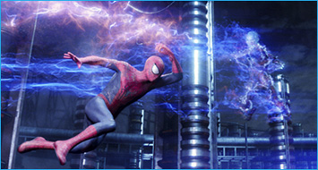
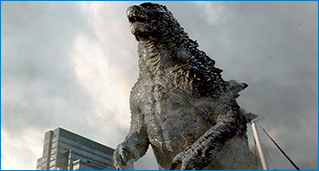

Spider-Man and related characters and elements: TM & (C)2014 Marvel.
公開中
『アメイジング・スパイダーマン2』
世界はスパイダーマンを失うのか？
スパイダーマンを抹消すべく次々に現れる３強敵！
史上最大の戦いが始まる！
ピーター・パーカーはスパイダーマンとしてＮＹの人々を守り、1人の男性として恋人グウェンを愛する人生を満喫していた。しかし旧友であるハリー・オズボーンがＮＹに戻り、少しずつその生活に変化が・・・。オズコープ社の電気技師マックス・ディランが事故で変貌した、高圧電流で全てを破滅する電撃魔人エレクトロを始め、強力なサイ型アーマーで全てを粉砕する怪力鉄人ライノ、そして高速グライダーで全てを切り裂く空中怪人グリーン・ゴブリンが、“スパイダーマンのいない世界”を創ろうと、次々と彼の前に立ちはだかる。そしてついに、世界の終わりが近づこうとしていた・・・。
監督：マーク・ウェブ
出演：アンドリュー・ガーフィールド、エマ・ストーン、ジェイミー・フォックス、デイン・デハーン、サリー・フィールドほか
© 2014 Alcon Entertainment, LLC. All Rights Reserved.
6月28日公開
『トランセンデンス』
進化するのは、人類だけなのか
トランセンデンス、それはすべてを超越する。
圧倒的映像世界でアカデミー賞４部門を授賞した『インセプション』、映画史に金字塔を打ち立てた『ダークナイト』シリーズのキャスト、スタッフが再集結！
死すべき運命だった科学者ウィル。しかしその意識は、死の間際に妻エヴリンによってスーパーコンピュータへとインストールされた。意識だけの存在となったウィルは、オンラインに繋がると軍事機密、金融、政治から個人情報まで、世界中のあらゆる情報を手に入れ、究極的な進化を遂げる。そしてナノテクノロジーを駆使し、現実の世界にまで及んだ彼の力は、遂に生命までもコントロールし始めた。常人を遥かに超える力で増殖し、拡散し、支配するウィルに「彼は私の愛した人なの？」と信じる心が揺らぎ始めるエヴリン。まるで神のごとき力を手にし、変わり果てた男に世界は恐怖を感じ、密かに抹殺計画が進行し始める。そしてエヴリンにも選択の時が…。
監督：ウォーリー・フィスター
出演：ジョニー・デップ、モーガン・フリーマン、ポール・ベタニー、レベッカ・ホール、キリアン・マーフィ、ケイト・マーラ
(C)2014 VILLAGE ROADSHOW FILMS(BMI)LIMITED
7月4日公開
『オール・ユー・ニード・イズ・キル』
あらゆる軍事力を持ってしても対抗することのできない侵略者により熾烈な襲撃を受けている近未来の地球を舞台に繰り広げられるアクション超大作。
突然、決死の任務に就くことになったウィリアム・ケイジ少佐（クルーズ）は本格的な戦闘を前にあっけなく命を落としてしまう。ところが意識を取り戻したケイジは自分が不可解なタイムループの世界にいて、何度も戦闘と戦死を繰り返しながら……同じ戦いを生き抜かねばならないことに気づくのだった。しかし、特殊部隊の軍人であるリタ・ヴラタスキ（ブラント）と共に敵との戦いを繰り返していく間にケイジの戦闘技術は次第に磨き上げられていく。やがて戦いを続けていくうちに、ふたりは少しずつ敵を倒す糸口を掴んでいくことになる。
監督：ダグ・ライマン
出演：トム・クルーズ、エミリー・ブラント、ビル・パクストン、キック・ガリー、ドラゴミール・ムルジッチ、シャーロット・ライリー、ジョナス・アームストロング、フランツ・ドラメー
(C)2014 Disney Enterprises, Inc. All rights reserved.
7月5日公開
『マレフィセント』
〜ウォルト・ディズニー創立90周年記念作品〜「眠れる森の美女」の悪役マレフィセントの視点で描かれる、“禁断の呪い”が生んだ究極の愛の物語
ある王国で、念願のロイヤル・ベビー、オーロラ姫の誕生を祝うパーティーが開かれている。招待客たちが次々に祝福に訪れ、城は幸福感で満ちていた。“招かれざる客”である邪悪な妖精マレフィセントが現れるまでは…。そして、彼女はオーロラ姫に恐ろしい呪いをかける─「16歳の誕生日の日没までに、姫は永遠の眠りにつくだろう」─なぜマレフィセントはそのような恐ろしい呪いをかけねばならなかったのか？謎を解く鍵は、人間界と妖精界とのあまりに悲しい戦いの歴史と、マレフィセント自身の封印された過去にあった。マレフィセントの呪いは成就してしまうのか？ そして、呪いがマレフィセントとオーロラ姫にもたらす、驚くべき運命とは…？
監督：ロバート・ストロンバーグ
出演：アンジェリーナ・ジョリー、エル・ファニング

(C) 2014 WARNER BROS. ENTERTAINMENT INC. ＆ LEGENDARY PICTURES PRODUCTIONS LLC
7月25日公開
『マレフィセント』
最高の恐怖 極限の絶望 ゴジラ復活
全世界待望のハリウッドゴジラ この作品は、日本が誇る世界で最も著名なキャラクター「ゴジラ」をハリウッドの超一流スタッフ・キャストによって映画化される超大作である。1954年の「ゴジラ」誕生から60年。想像を絶するスケールのゴジラがハリウッドの手によって生まれ変わる。テーマは「リアル」。ストーリーは「極秘」。 今、人智をはるかに超えるゴジラが現れたら、我々は何を感じ、何をなすのか？何を大切にし、何を犠牲にするのか？日本から始まる物語は、徹底的にシミュレーションを重ね、アクション映画の枠を超えた繊細なドラマに練り上げられている。もちろんゴジラ自体の造形、動きもリアルにこだわった。ゴジラ本来の存在感を持ちつつ、これまでの映像技術では表現できなかった微妙な動きが加味され、全く新しいこれまでで最大のゴジラ像をフルＣＧで作り上げた。
監督：ギャレス・エドワーズ
出演：アーロン・テイラー＝ジョンソン、渡辺 謙、エリザベス・オルセン、ジュリエット・ビノシュ、サリー・ホーキンズ、デヴィッド・ストラザーン、ブライアン・クランストン